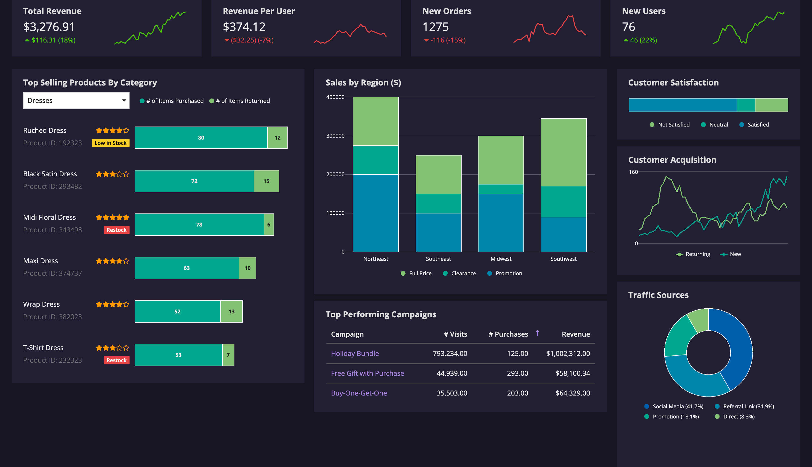

Global Sales Performance Dashboard
Built an interactive Power BI dashboard to track revenue, profit, and KPIs by region, product, and time. Helped identify under-performing regions and high-value customers.
I build reliable software and data-driven solutions. From visual geolocation and 3D pattern retrieval to dashboards and ML models, I transform ideas & datasets into impactful results.
Software Engineer & Data Analyst currently pursuing a Master’s in Computer Science – Digital Transformation at ESIGELEC, Rouen. I work across full-stack development, 3D data processing, and analytics — with projects in geolocalization, hospital systems, and 3D relief pattern retrieval.
I have experience with .NET, Python, SQL, and cloud-based systems, plus strong data skills using Power BI and Python (Pandas, NumPy, Matplotlib, Seaborn). I enjoy solving practical problems and presenting results in a simple, visual way that non-technical people can understand.
Technologies & concepts I work with regularly.
Comfortable going from raw data & requirements to clean code, analysis, and clear documentation.
Built an interactive Power BI dashboard to track revenue, profit, and KPIs by region, product, and time. Helped identify under-performing regions and high-value customers.
Cleaned loan data, engineered features, and trained ML models to predict default risk and support better approval decisions with clear performance metrics.
Used association rule mining (Apriori) to discover frequently bought-together products and proposed cross-sell and upsell strategies for retail.
Explored healthcare datasets to analyze diabetes-related indicators and visualized key risk factors to support better awareness and early prevention.
Cleaned environmental datasets using MICE, analyzed CO₂ emissions, GDP, and renewable energy usage, and built visuals to support sustainability-focused decisions.
Developed a visual-based geolocation system to determine object positions using image data. Applied Triangulation, SIFT, and AKAZE algorithms to match features from multiple views and improve robustness.
Designed a .NET 8 health management system to securely manage donor and hospital records. Built REST APIs for real-time operations and enforced strong validation for data consistency.
Built a 3D relief-pattern recognition pipeline to identify engraved or textured surfaces in scan data. Applied surface feature extraction and similarity analysis for forensic-style use cases.
Let’s connect. I’m open to software & data roles, internships, and collaboration.